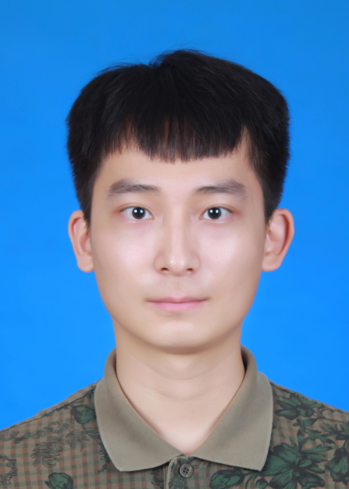

Information

Pucheng Dang Male University of Chinese Academy of Sciences
Mail:dangpucheng20g@ict.ac.cn
Mail:dangpucheng20g@ict.ac.cn
Research Field
Computer Vision and Machine Learning
Education
2020-09--now University of Chinese Academy of Sciences MS Student
2015-09--2019-06 Harbin Institute of Technology Undergrad Student
2015-09--2019-06 Harbin Institute of Technology Undergrad Student